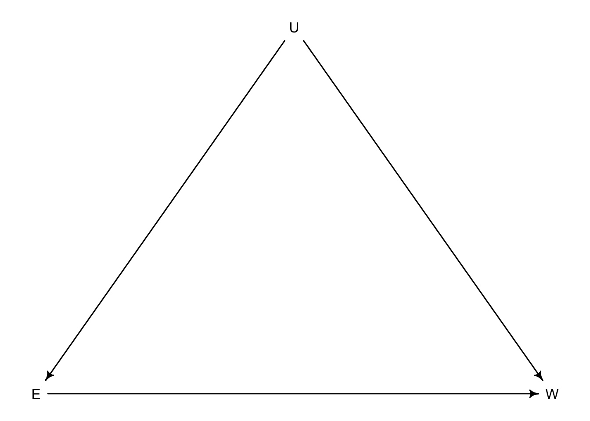

Chapter 6 The haunted dag & the casual terror
If a review panel receives 200 proposals and can only fund 20 (10%) based on newsworthiness and trustworthiness, a negative correlation is bound to occur from strong selection.
set.seed(11)
N <- 200 #number of proposals
p <- 0.1 #proportion to select for funding
#set up random pairs of newsworthiness and trustworthiness
nw <- rnorm(N)
tw <- rnorm(N)
#select top 10% of total score
s <- nw + tw #total score
q <- quantile(s, 1-p) #top 10% threshold
selected <- ifelse(s >= q, TRUE, FALSE) # assign TRUE to selected values
col.factor <- ifelse(s >= q, 1, 0) # plotting colour code
df <- data.frame(nw, tw, s, selected, as.factor(col.factor)) # stitch a df for plotting
df2 <- df[selected == TRUE,] # grab selected values for quick linear model
plot(df$nw, df$tw, col = df$as.factor.col.factor, xlab = 'newsworthiness', ylab = 'trustworthiness')
abline(lm(nw ~ tw, data = df2), col = 'red')
mtext(cor(tw[selected], nw[selected]))
Strong selection induces a negative correlation among the criteria used in the selection. Why? If the only way to corss the threshold is to score high, it is more common to score high on one item than on both.
— p.161
This phenomenon is referred to as Berkson’s Paradox. But you can remember it as the selection-distortion effect. This effect can be very common inside multiple regression models. When you add a predictor to a model the model wants to statistically include that parameter at any cost. This can be referred to as collider bias.
6.1 Multicollinearity
To have multicollinearity, there must be a very strong association between two or more predictors in your model.
6.1.1 Example: Try to predict height from length of a person’s legs.
N <- 100 #number of people
set.seed(11)
height <- rnorm(N, 10, 2) #simulate total height
leg_prop <- runif(N, 0.4, 0.5) #leg as a proportion of height
leg_left <- leg_prop*height + rnorm(N, 0, 0.02) #left leg with error
leg_right <- leg_prop*height + rnorm(N, 0, 0.02) # right leg with error (only error will vary here)
d <- data.frame(height, leg_left, leg_right)Now we can build a model that predicts height from leg length. We set the leg_prop to be bound from 0.4 to 0.5 so on average the leg proportions should be about 45% (0.45) of a persons height. If we were to guess then what the \(\beta\) coefficients would be we would ballpark somewhere around the average height (10) divided by 45% of the average height (10/0.45 = 4.5). This 10 / 4.5 is about 2.2. Let’s see if our guess is close.
library(rethinking)
m6.1 <- quap(
alist(
height ~ dnorm(mu, sigma),
mu <- a + bl*leg_left + br*leg_right,
a ~ dnorm(10, 5), #really wide priors
bl ~ dnorm(2, 5),
br ~ dnorm(2, 5),
sigma ~ dexp(1)
), data = d)
precis(m6.1)## mean sd 5.5% 94.5%
## a 0.95222088 0.31790120 0.4441534 1.4602884
## bl 0.06223552 1.99578411 -3.1274129 3.2518840
## br 1.93732727 1.98698630 -1.2382606 5.1129151
## sigma 0.59950562 0.04221453 0.5320386 0.6669726These seem a bit wonky. What happened? Let’s plot to get a better understanding
precis_plot(precis(m6.1))
No matter how many times we run the simulation the leg length appears to be unimportant. This is because the model is trying to tell us how important knowing the other leg length is once we know the length of one leg. If we only knew right leg data, the right leg length would be pretty important.
If we were to look at the posterior distribution of the two leg length coefficients we would see that one is not more informative than the other
post <- extract.samples(m6.1)
plot(bl ~ br, post, col=col.alpha(rangi2, 0.1), pch = 16)
Basically this plot shows that any combination of br and bl will fall along a very thin line, suggesting any combination of these values will have equal predictive power.
We fit a model that looks like this:
\[\begin{equation} y_{i} \sim \text{Normal}(\mu_{i}, \sigma)\ \mu_{i} = \alpha + \beta_{1}x_{i} + \beta_{2}x_{i}\ \end{equation}\]
Because the leg lengths are very similar we can write \(x_{i}\) twice, and because of this the model golem simplifies the model to be:
\[\begin{equation} \mu_{i} = \alpha + (\beta_{1} + \beta_{2})x_{i}\ \end{equation}\]
In this version \(\beta_{1}\) and \(\beta_{2}\) can’t be considered separately because they do not have individual influences on \(\mu\). The sum of the coefficients does however influence \(\mu\), so we can calculate that to get a better idea of how leg lengths influence height.
sum_blbr <- post$bl + post$br
dens(sum_blbr, col=rangi2, lwd = 2, xlab = 'sum of bl and br')
If you recall we did estimate the coefficient to be somewhere slightly larger than 2 which is shown here.
Here is a single leg model for comparison :
m6.2 <- quap(
alist(
height ~dnorm(mu,sigma),
mu <-a+bl*leg_left,
a ~dnorm(10,100),
bl ~dnorm(2,10),
sigma ~dexp(1)
), data = d
)## Caution, model may not have converged.## Code 1: Maximum iterations reached.precis(m6.2)## Warning in sqrt(diag(vcov(model))): NaNs produced
## Warning in sqrt(diag(vcov(model))): NaNs produced
## Warning in sqrt(diag(vcov(model))): NaNs produced## mean sd 5.5% 94.5%
## a 25.5498117 54.248421 -61.14964 112.24927
## bl 0.1562758 9.168886 -14.49738 14.80993
## sigma 479.5199897 NaN NaN NaN6.1.2 Multicollinear milk
Let’s look at some real data for an example of correlated predictors
data(milk)
d <- milk
d$K <- standardize(d$kcal.per.g)
d$F <- standardize(d$perc.fat)
d$L <- standardize(d$perc.lactose)Let’s see how percent fat and percent lactose do at predicting energy content of milk
#model for percent fat
m6.3 <- quap(
alist(
K ~ dnorm(mu, sigma),
mu <- a + bF*F,
a ~ dnorm(0, 0.2),
bF ~ dnorm(0, 0.5),
sigma ~ dexp(1)
), data = d
)
#model for percent lactose
m6.4 <- quap(
alist(
K ~ dnorm(mu, sigma),
mu <- a + bL*L,
a ~ dnorm(0, 0.2),
bL ~ dnorm(0, 0.5),
sigma ~ dexp(1)
), data = d
)
precis(m6.3)## mean sd 5.5% 94.5%
## a -2.185005e-06 0.07725163 -0.1234652 0.1234608
## bF 8.618959e-01 0.08426050 0.7272313 0.9965604
## sigma 4.510157e-01 0.05870685 0.3571909 0.5448406precis(m6.4)## mean sd 5.5% 94.5%
## a 7.997789e-07 0.06661645 -0.1064652 0.1064668
## bL -9.024550e-01 0.07132863 -1.0164520 -0.7884581
## sigma 3.804660e-01 0.04958285 0.3012231 0.4597090Pretty much polar opposites of each other. More fat = more energy, more lactose = less energy. But what happens if they are considered together?
m6.5 <- quap(
alist(
K ~ dnorm(mu, sigma),
mu <- a + bF*F + bL*L,
a ~ dnorm(0, 0.2),
bF ~ dnorm(0, 0.5),
bL ~ dnorm(0, 0.5),
sigma ~ dexp(1)
), data = d
)
precis(m6.5)## mean sd 5.5% 94.5%
## a -5.951129e-06 0.06603601 -0.10554425 0.1055323
## bF 2.435066e-01 0.18357932 -0.04988858 0.5369018
## bL -6.780742e-01 0.18377740 -0.97178595 -0.3843624
## sigma 3.767433e-01 0.04918443 0.29813710 0.4553495Both coefficients have shifted much closer to 0 and the standard deviations have more than doubled.
pairs(~ kcal.per.g + perc.fat + perc.lactose, data = d, col = rangi2)
Pay attention to the first column of graphs where kcal.per.g is virtually mirrored across perc.fat and perc.lactose. These two predictors are so strongly correlated that knowing one is enough to predict kcal.per.g.
6.2 Post-treatrment bias
Post-treatment bias comes from included variable bias and experimental design. Say you grew plants in different soil types to test anti-fungal resistance of the soil. You measure the height of the plant at the start of the trial, add in the soil treatment, measure the height of the plant at the end of the trial, and check for presence of fungus.
So you have initial height, final height, treatment, and fungus. What should be in the model? If you are hypothesizing that fungus slows growth, final height is the outcome of interest and fungus presence should be discarded because it is a post-treatment effect.
Let’s simulate to be sure
set.seed(11)
N <- 100 #number of plants
h0 <- rnorm(N,10,2) #initial height
treatment <- rep(0:1, each = N/2) #assign treatments
fungus <- rbinom(N, size = 1, prob = 0.5 - treatment*0.4) #assign fungus
h1 <- h0 + rnorm(N, 5-3*fungus) #simulate growth
d <- data.frame(h0=h0, h1=h1, treatment=treatment, fungus=fungus)
precis(d)## mean sd 5.5% 94.5% histogram
## h0 9.752973 1.8289342 6.976258 12.74917 ▁▂▂▇▅▅▃▂▁▁
## h1 13.784304 2.5918058 9.598218 17.75557 ▁▂▃▃▇▇▅▃▅▃▁▁▁
## treatment 0.500000 0.5025189 0.000000 1.00000 ▇▁▁▁▁▁▁▁▁▇
## fungus 0.350000 0.4793725 0.000000 1.00000 ▇▁▁▁▁▁▁▁▁▃6.2.1 A prior is born
If we didn’t know how the data was created and actually conducted the plant experiment, we would be able to assume that all plants will have grown some amount from the beginning to the end of the experiment. In this way we can scale the growth to be proportion of initial height such that:
\[\begin{equation} h_{1,i} \sim \text{Normal}(\mu_{i}, \sigma)\ \mu_{i} = h_{0,i} \times p \end{equation}\]
Here \(p\) is a parameter that is standing in for the proportion grown from \(h_{0}\) to \(h_{1}\). In another way, \(p = h_{1}/h_{0}\) and \(p = 1\) would mean no growth and \(p = 2\) means the plant has doubled it’s size. Because \(p\) is a proportion, it must be positive, even if the plant dies (\(p = 0\)) so we will use the log normal distribution as a prior.
sim_p <- rlnorm(1e4, 0, 0.25) #simulate p values
precis(data.frame(sim_p))## mean sd 5.5% 94.5% histogram
## sim_p 1.034501 0.2606664 0.6749326 1.49171 ▁▁▃▇▇▃▁▁▁▁▁▁dens(sim_p)
This prior distribution expects that there should be roughly no growth but anywhere from 40% shrinkage to 50% growth. Let’s put the prior in the model without any predictors.
m6.6 <- quap(
alist(
h1 ~ dnorm(mu, sigma),
mu <- h0*p,
p ~ dlnorm(0, 0.25),
sigma ~ dexp(1)
), data = d
)
precis(m6.6)## mean sd 5.5% 94.5%
## p 1.400621 0.01775487 1.372246 1.428997
## sigma 1.762761 0.12303782 1.566123 1.959399About 40% growth on average from the model. But what about adding some predictors? We will add both treatment and fungus.
\[\begin{equation} h_{1,i} \sim \text{Normal}(\mu_{i}, \sigma)\ \mu_{i} = h_{0, i} \times p\ p = \alpha + \beta_{T}T_{i} + \beta_{F}F_{i}\ \alpha \sim \text{Log-Normal}(0, 0.25)\ \beta_{T} \sim \text{Normal}(0, 0.5)\ \beta_{F} \sim \text{Normal}(0, 0.5)\ \sigma \sim \text{Exponential}(1) \end{equation}\]
Notice how \(p\) is now a linear model parameterized by the predictors treatment and fungus.
m6.7 <- quap(
alist(
h1 ~ dnorm(mu, sigma),
mu <- h0 * p,
p <- a + bt*treatment + bf*fungus,
a ~ dlnorm(0, 0.2),
bt ~ dnorm(0, 0.5),
bf ~ dnorm(0, 0.5),
sigma ~ dexp(1)
), data = d
)
precis(m6.7)## mean sd 5.5% 94.5%
## a 1.52442223 0.02589644 1.48303472 1.5658097500
## bt -0.04742812 0.02926555 -0.09420012 -0.0006561103
## bf -0.30101915 0.03114703 -0.35079812 -0.2512401777
## sigma 1.20701921 0.08461445 1.07178898 1.3422494372So now a is like the previous p with a similar average growth of about 50%. Treatment (bt) seems to have no effect and fungus is slowing growth. How could treatment not have an effect if we built the data to ensure that it did?
6.2.2 Blocked by consequence
Because treatment influenced fungus presence and was not included in the growth estimation, it adds very little information once we know if fungus was present or not. here is a model without fungus
m6.8 <- quap(
alist(
h1 ~ dnorm(mu, sigma),
mu <- h0 * p,
p <- a + bt*treatment,
a ~ dlnorm(0, 0.2),
bt ~ dnorm(0, 0.5),
sigma ~ dexp(1)
), data = d
)
precis(m6.8)## mean sd 5.5% 94.5%
## a 1.3410577 0.02474841 1.30150494 1.3806104
## bt 0.1108954 0.03387262 0.05676043 0.1650304
## sigma 1.6826776 0.11753297 1.49483725 1.8705180Now we have a strong positive coefficient (bt) for treatment on growth of the plants. This is good news. It means that the hypothesized mechanism (fungus slowing growth) appears to be true because including fungus zeros the treatment effect.
6.2.3 Fungus and d-separation
Let’s make a DAG for this plant model
library(dagitty)
plant_dag <- dagitty("dag {
H_0 -> H_1
F -> H_1
T -> F
}")
coordinates(plant_dag) <- list(x = c(H_0 = 0, T = 2, F = 1.5, H_1 = 1),
y = c(H_0 = 0, T = 0, F = 0, H_1 = 0))
drawdag(plant_dag)
In this framework treatment \(T\) influences fungus \(F\) which influences final plant height \(H_{1}\). And the initial plant height \(H_{0}\) has a separate influence on \(H_{1}\). When we include fungus in the model we are blocking treatment from influencing the outcome \(H_{1}\). When a parameter is blocking the effect of another, it is called **d-separation* or directional separation. When we condition the model on \(F\), we create an independence between \(T\) and \(H_{1}\). Here is how we can gather all conditional independencies for the above DAG:
impliedConditionalIndependencies(plant_dag)## F _||_ H_0
## H_0 _||_ T
## H_1 _||_ T | FSo we have three independencies. The first two simply separate the left side \(H_{0}\) from the right side. The third one is the one of interest where \(H_{1}\) is independent of \(T\) when conditioned on \(F\). There is no additional information gained by including \(T\) after \(F\).
Observational experiments have additional trouble with unobserved variables. What if there was something else that was influencing both \(H_{1}\) and \(F\) and broke their dependence? Let’s say moisture is that missing link.
So now we have broken the path from \(T\) to \(H_{1}\) so there shouldn’t be an influence of \(T\) on \(H_{1}\).
Let’s update the data
set.seed(11)
N <- 1000
h0 <- rnorm(N, 10, 2)
treatment <- rep(0:1, each = N/2)
M <- rbern(N)
fungus <- rbinom(N, size = 1, prob = 0.5 - 0.4*treatment + 0.4*M)
h1 <- h0 + rnorm(N, 5 + 3*M)
d2 <- data.frame(h0=h0, h1=h1, treatment=treatment, fungus=fungus)So \(M\) was used to influence \(F\) and \(H_{1}\) but was not included in the new data. Let’s see how this changes our models
m6.7b <- quap(
alist(
h1 ~ dnorm(mu, sigma),
mu <- h0 * p,
p <- a + bt*treatment + bf*fungus,
a ~ dlnorm(0, 0.2),
bt ~ dnorm(0, 0.5),
bf ~ dnorm(0, 0.5),
sigma ~ dexp(1)
), data = d2
)
m6.8b <- quap(
alist(
h1 ~ dnorm(mu, sigma),
mu <- h0 * p,
p <- a + bt*treatment,
a ~ dlnorm(0, 0.2),
bt ~ dnorm(0, 0.5),
sigma ~ dexp(1)
), data = d2
)
precis(m6.7b)## mean sd 5.5% 94.5%
## a 1.51625146 0.01313354 1.49526152 1.53724139
## bt 0.06862459 0.01398489 0.04627403 0.09097516
## bf 0.16527116 0.01400138 0.14289426 0.18764807
## sigma 2.06601352 0.04612638 1.99229465 2.13973239precis(m6.8b)## mean sd 5.5% 94.5%
## a 1.628343101 0.009667407 1.61289272 1.64379348
## bt 0.001884175 0.013636836 -0.01991012 0.02367847
## sigma 2.203247647 0.049185180 2.12464023 2.28185506Now when fungus is in the model, bt seems to have a positive effect. The model without fungus shows bt to be useless. How did \(M\) have this effect to make \(T\) seem important when we know that it shouldn’t?
6.3 Collider bias
Returning now to the selection bias example with trustworthiness and newsworthiness, let’s see Collider bias in action
Any parameter with two arrows pointing at it is called a collider. For this example, if we knew \(S\) and \(T\) for example, then adding \(N\) would offer no additional information. If a proposal was accepted (\(S = \text{True}\)) and we knew it had a high value of trustworthiness (\(T\)) we would already have an idea that the newsworthiness (\(N\)) would be low.
6.3.1 Collider for false sorrow
Is age associated with happiness?
For hypothetical reasons, we will consider that happiness in part is determined at birth and is generally static through time. Additionally, happy people tend to get married more than unhappy people. Marriage is also influenced by age with people who live longer eventually get married. Together:
c2 <- dagitty("dag{
H -> M
A -> M
}")
coordinates(c2) <- list(x = c(H = 0, M = 1, A = 2),
y = c(H = 0, M = 0, A = 0))
drawdag(c2)So we have set up marriage to be a collider. If we were to include marriage as a predictor in a regression model, it will artificially create an association between happiness and age.
There is a algorithm built in the rethinking package that can simulate data for this example.
- each year 20 people are born with uniformly distributed happiness
- each year age increases but happiness does not
- after age 18 marriage is possible and odds of marriage are based on happiness
- once married, individuals remain married
- after age 65 individuals leave the system
d <- sim_happiness(seed = 1977, N_years = 1000)
precis(d)## mean sd 5.5% 94.5% histogram
## age 3.300000e+01 18.768883 4.000000 62.000000 ▇▇▇▇▇▇▇▇▇▇▇▇▇
## married 3.007692e-01 0.458769 0.000000 1.000000 ▇▁▁▁▁▁▁▁▁▃
## happiness -1.000070e-16 1.214421 -1.789474 1.789474 ▇▅▇▅▅▇▅▇d now contains 1000 years of age, happiness, and marriage status. To avoid unmarried children from altering the results we can remove them.
d2 <- d[d$age > 17,] #pick out adults
d2$A <- (d2$age - 18) / (65 - 18) #set age back to zero and bound between 0 and 1plot(d2$age, d2$happiness, col = as.factor(d2$married))Now we can create the model of happiness from age and marriage status
d2$mid <- d2$married + 1 #have marriage status either 1 (not) or 2 (married)
m6.9 <- quap(
alist(
happiness ~ dnorm(mu, sigma),
mu <- a[mid] + bA*A,
a[mid] ~ dnorm(0,1),
bA ~ dnorm(0, 2),
sigma ~ dexp(1)
), data = d2
)
precis(m6.9, depth = 2)## mean sd 5.5% 94.5%
## a[1] -0.2350877 0.06348986 -0.3365568 -0.1336186
## a[2] 1.2585517 0.08495989 1.1227694 1.3943340
## bA -0.7490274 0.11320112 -0.9299447 -0.5681102
## sigma 0.9897080 0.02255800 0.9536559 1.0257600Our model believes that there is a strong negative relationship between age and happiness. The alpha values for intercepts make sense though with a[1] identifying non-married folks and a[2] identifying married people. What about if we ignore marriage?
m6.10 <- quap(
alist(
happiness ~ dnorm(mu, sigma),
mu <- a + bA*A,
a ~ dnorm(0,1),
bA ~ dnorm(0, 2),
sigma ~ dexp(1)
), data = d2
)
precis(m6.10)## mean sd 5.5% 94.5%
## a 1.649248e-07 0.07675015 -0.1226614 0.1226617
## bA -2.728620e-07 0.13225976 -0.2113769 0.2113764
## sigma 1.213188e+00 0.02766080 1.1689803 1.2573949And now the once negative association is gone.
6.3.2 The haunted DAG
Sometimes colliders are created from unobserved variables
Here we have a DAG that describes grandparents \(G\) and parents \(P\) influence on their children’s academic achievement \(C\). But what if there were influeneces that couldn’t be measured like neighbourhood effects or something that would effect the household of the parents and children but not grandparents. We will call this \(U\).
Even if \(U\) remains unmeasured, it can still introduce bias in the model.
Our set up:
1. \(P\) is a function of \(G\) and \(U\)
2. \(C\) is a function of \(G\), \(P\), and \(U\)
3. \(G\) and \(U\) are not influenced by any other known variables
N <- 200 #number of families
b_GP <- 1 #effect of G on P
b_GC <- 0 #effect of G on C
b_PC <- 1 #effect of P on C
b_U <- 2 #effect of U on P and C#random observations
set.seed(11)
U <- 2*rbern(N, 0.5) - 1
G <- rnorm(N)
P <- rnorm(N, b_GP*G + b_U*U)
C <- rnorm(N, b_PC*P + b_GC*G + b_U*U)
d <- data.frame(C=C, P=P, G=G, U=U)So if we wanted to know the influence of \(G\) on \(C\) we would also have to include \(P\) because some effect passes from \(G\) to \(C\) through \(P\).
m6.11 <- quap(
alist(
C ~ dnorm(mu, sigma),
mu <- a + b_PC*P + b_GC*G,
a ~ dnorm(0, 1),
c(b_PC, b_GC) ~ dnorm(0, 1),
sigma ~ dexp(1)
), data = d
)
precis(m6.11)## mean sd 5.5% 94.5%
## a 0.04096459 0.09759488 -0.1150109 0.1969401
## b_PC 1.84994960 0.04376129 1.7800106 1.9198886
## b_GC -0.83312218 0.10787908 -1.0055338 -0.6607106
## sigma 1.37707320 0.06850756 1.2675849 1.4865615The estimated effect of parents on children seems to be too large, likely from the input of \(U\) which the model doesn’t know about. But the negative effect of grandparents on their grandchildren is absurd.
If we were to plot the grandparent education against grandchild education we would see positive relationships in each neighbourhood. But if we subsampled by middle percentiles of parent education we would see the negative relationship from the above model.
This is possible because of how we constructed the data using \(U\) as an influence on \(P\) and \(C\). If the model knows \(P\) then the \(G\) parameter secretly tells the model about \(U\) even though it isn’t included in the model. This is a confusing concept to explain so consider the graph above. The filled in dots are family groups where parents have roughly the same education level. So here when the model conditions on \(P\) (imagine only the filled in dots exist) the outcome of \(G\) on \(C\) appears to be negative where we are selecting the top of the ‘bad neighbourhood’ families, and the bottom of the ‘good neighbourhood’ families.
So measuring \(U\) and including it in the model is the only real way to get around this.
m6.12 <- quap(
alist(
C ~ dnorm(mu, sigma),
mu <- a + b_PC*P + b_GC*G + b_U*U,
a ~ dnorm(0, 1),
c(b_PC, b_GC, b_U) ~ dnorm(0, 1),
sigma ~ dexp(1)
), data = d
)
precis(m6.12)## mean sd 5.5% 94.5%
## a 0.12195789 0.07084901 0.008727491 0.2351883
## b_PC 1.04847302 0.06712619 0.941192398 1.1557536
## b_GC -0.06698041 0.09661348 -0.221387419 0.0874266
## b_U 2.04106421 0.15035130 1.800773788 2.2813546
## sigma 0.99391904 0.04952629 0.914766468 1.0730716Once we account for \(U\), we are able to recover our slopes that we set previously. (0, 1, 2)
6.4 Confronting confounding
Let’s see if we can tie it all together to deal with the multiple ways condfounding appears. Suppose we are interested in the relationship between education \(E\) and wages \(W\). Unfortunately there are multiple unobserved variables that can influence both \(E\) and \(W\) such as neighbourhood, parents, friends, etc. We will call these \(U\). 
So if we are interested in \(W\) as the outcome and \(E\) as the predictor, it is confounded by the two paths that lead connect \(E\) and \(W\). \(E \rightarrow W\) and \(E \leftarrow U \rightarrow W\) are both considered paths as the direction of the arrows doesn’t matter in this sense. What matters is that \(E\) and \(W\) have two different connections, one of which has an unobserved piece.
If we were able to have absolute control \(E\) it would break the second path by blocking the influence of \(U\) on \(E\).
When we are unable to manipulate \(E\) we have to condition on \(U\) so that knowing \(U\) disrupts any information gained by knowing \(E\). If \(U\) in this case was regions and different regions had different average wealth levels. Higher wealth regions \(U\) would have higher wages contributing to wealth \(W\) and to get high \(W\) you need higher education \(E\). So once you condition on \(U\) knowing \(E\) doesn’t add any useful information to the model. But knowing \(E\) still informs us of \(W\).
6.4.1 Shutting the backdoor
Blocking confounding paths from a predictor \(X\) to an outcome of interest \(Y\) is called shutting the backdoor. Above, the \(E \leftarrow U \rightarrow W\) path would be considered a backdoor path.
Here we will run through the four types of paths that can crop up and possibly create backdoors
- FORK: \(X \leftarrow Z \rightarrow Y\) ; \(Z\) influences both \(X\) and \(Y\) and conditioning on \(Z\) will make \(X\) and \(Y\) independent
- PIPE: \(X \rightarrow Z \rightarrow Y\) ; \(X\) influences \(Z\) which influences \(Y\) and conditioning on \(Z\) will make \(X\) and \(Y\) independent
- COLLIDER: \(X \rightarrow Z \leftarrow Y\) ; No relation exists between \(X\) and \(Y\) UNLESS you condition on \(Z\) which will open the path but doesn’t contain any causation
- DESCENDENT: \(X \rightarrow Z \leftarrow Y\) & \(Z \rightarrow D\) ; It is like the collider but \(Z\) is a parent of descendent \(D\) and conditioning on \(D\) will be a partial condition on \(Z\). Note that descendents aren’t only present in colliders. They could crop up in many places
And here is the proposed recipe on how to open or close these potential backdoors
1. List all paths from \(X\) to \(Y\)
2. Classify paths from step 1 as open (fork or pipe) or closed (collider)
3. Classify paths as backdoor paths (arrow entering \(X\))
4. If there are any open backdoor paths, decide which variable to condition on to close it
6.4.2 Two roads
As an example, we have an exposure of interest \(X\) on outcome \(Y\). \(A\), \(B\), and \(C\) are observed with \(U\) being unobserved.
- Step 1: list all paths from \(X\) to \(Y\)
- \(X \rightarrow Y\)
- \(X \leftarrow U \leftarrow A \rightarrow C \rightarrow Y\)
- \(X \leftarrow U \rightarrow B \leftarrow C \rightarrow Y\)
- \(X \rightarrow Y\)
- Step 2: classify all paths as open or closed
- Open (direct)
- Open
- Closed on B
- Step 3: classify backdoor paths
- NA (direct)
- backdoor
- backdoor (closed)
- Step 4: Find which variable to condition on to make \(X\) and \(Y\) independent
- NA
- \(A\) or \(C\) should work as \(U\) is unobserved
- NA
We can also ask our computer to do this for us if we know the DAG
dag_6.1 <- dagitty("dag {
U [unobserved]
X -> Y
X <- U <- A -> C -> Y
U -> B <- C
}")
adjustmentSets(dag_6.1, exposure = "X", outcome = "Y")## { C }
## { A }6.4.3 Backdoor waffles
BW_dag <- dagitty("dag{
A -> M
A -> D
S -> A
S -> M
S -> W
W -> D
M -> D
}")
coordinates(BW_dag) <- list(x = c(A = 0, S = 0, W = 2, M = 1, D = 2),
y = c(A = 0, S = -1, W = -1, M = -0.5, D = 0))
drawdag(BW_dag)Let’s go back to the waffle divorce rate example in ch. 5. So what we want to know is if the number of Waffle House restaurants \(W\) actually influences divorce rate \(D\) in each state. \(A\) is median age of marriage, \(M\) is the marriage rate of the state and \(S\) tells us if it is a southern state or not. So from the graph, \(S\) has low age \(A\) high marriage rate \(M\) (through \(S \rightarrow M\) and \(S \rightarrow A \rightarrow M\)) and more waffle houses \(W\) (\(S \rightarrow W\)). Both \(A\) and \(M\) influence \(D\).
- Step 1: list paths from \(W\) to \(D\)
- \(W \rightarrow D\)
- \(W \leftarrow S \rightarrow M \rightarrow D\)
- \(W \leftarrow S \rightarrow A \rightarrow M \rightarrow D\)
- \(W \leftarrow S \rightarrow A \rightarrow D\)
- Step 2: classify open or closed
- direct
- open
- open
- open
- Step 3: classify backdoors
- direct
- backdoor
- backdoor
- backdoor
- Step 4: where do we condition?
- NA
- \(S\)
- \(S\)
- \(S\)
We can ask the computer to confirm
dag_6.2 <- dagitty("dag {
A -> D
A ->M -> D
A <- S -> M
S -> W -> D
}")
adjustmentSets(dag_6.2, exposure = "W", outcome = "D")## { A, M }
## { S }We could do \(A\) and \(M\) together or just condition on \(S\).
What about implied conditonal independencies?
impliedConditionalIndependencies(dag_6.2)## A _||_ W | S
## D _||_ S | A, M, W
## M _||_ W | SFrom this output we can say that: (i) \(A\) is independent of \(W\) when conditioned on \(S\) (ii) \(D\) is independent of \(S\) when conditioned on \(A\), \(M\), and \(W\) (iii) \(M\) is independent of \(W\) when conditioned on \(S\).